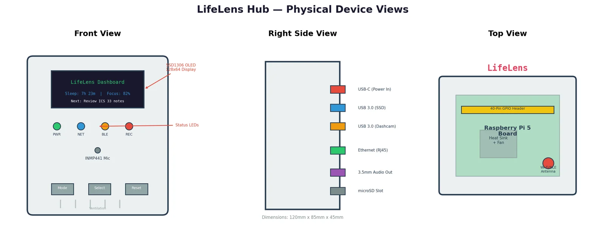
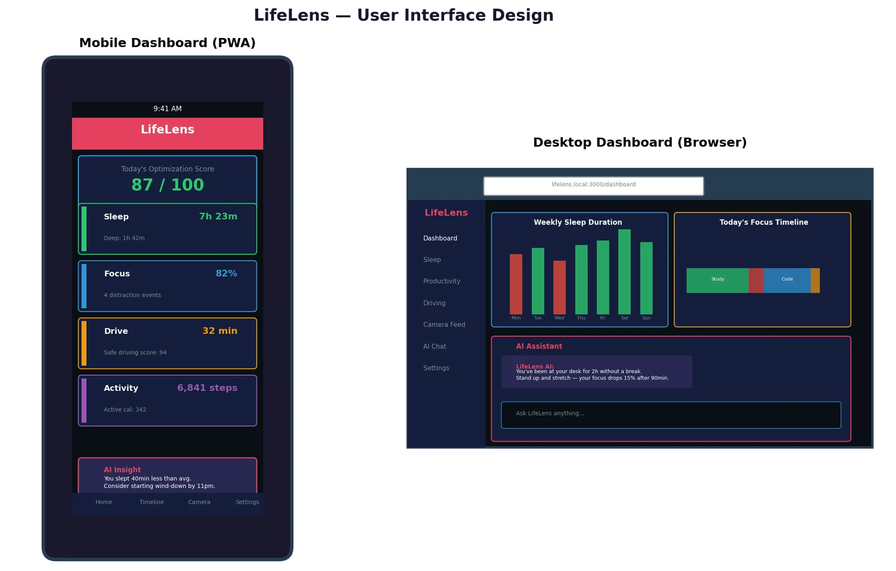

LifeLens
An IoT system that watches how you actually spend your time across home, body, and car, then coaches you with a language model that never leaves the house.
The problem
Most people have no objective way to compare how they spend their time with how they think they spend it. More than a third of American adults regularly sleep less than 7 hours, poor sleep degrades focus, and lost focus feeds more distraction. It's a loop that's hard to see from the inside.
LifeLens passively measures three environments: the home (a Blink camera), the body (Apple Watch health data), and the car (dashcam, OBD-II, and GPS). Everything lands on a Raspberry Pi 5, where a local LLM looks for patterns and tells you when to sleep, flags wasted time, and suggests what to do next. No data leaves the local network.
| Product | Sleep | Productivity | Driving | AI coach | Privacy |
|---|---|---|---|---|---|
| Apple Health | yes | no | no | no | good |
| Oura Ring | yes | partial | no | basic | cloud |
| RescueTime | no | yes | no | no | cloud |
| Whoop 4.0 | yes | no | no | basic | cloud |
| LifeLens | yes | yes | yes | full LLM | 100% local |
No existing product covers all three domains with a local model.
How it works
Four layers, each talking over a standard protocol (MQTT, I2C, I2S, USB, UART) so any piece can be swapped out.
The sensors
Blink camera: where you are
Every 60 seconds the Pi grabs a thumbnail through the blinkpy API and runs it through YOLOv8-nano, fine-tuned on ~500 labeled images to tell four states apart: at desk, in bed, on phone, absent. The frame is discarded right after; only the label, confidence, and timestamp are kept.
confidence ≥ 0.75 · 3.4 MB model · IR works in the dark
Apple Watch: how you slept
HealthKit is sandboxed to iOS, so a small Swift companion app queries it every 5 minutes with HKAnchoredObjectQuery, pulling only new samples, and publishes them to the Pi's MQTT broker. That covers sleep stages, heart rate, steps, and active calories.
topic lifelens/health/# · REM, Core, Deep
Car: how long you drove
An ELM327 OBD-II adapter reports speed, RPM, and engine load over Bluetooth. A NEO-6M GPS module logs trip coordinates and duration, and a 70mai A810 dashcam handles video.
NMEA 0183 at 9600 baud · USB serial
Mic and room sensor: are you focused
An INMP441 I2S microphone runs voice activity detection to tell a phone call from focused work. Audio is never recorded, only a speaking/not-speaking flag. A BME280 tracks temperature, humidity, and pressure.
VAD threshold 0.02 RMS · 16 kHz
One night, 11:47 PM
A simulated snapshot from the design: what each sensor reports, what the hub turns it into, and what the model says.
“You're in bed about 30 minutes later than your 11 PM target. The good news: your heart rate is already dropping and your room temperature is ideal for sleep. Tomorrow, try setting a wind-down alarm at 10:30 PM. Tonight you were on your phone until 11:18, which pushed back your sleep onset.” example output from Llama 3.1 8B, given the user's goal of 7+ hours and lights out by 11
The hub
A 3D-printed enclosure, 120 × 85 × 45 mm, with a 128×64 OLED, four status LEDs, the mic behind an acoustic port, and Mode/Select/Reset buttons. The Pi 5 sits on brass standoffs under an aluminum heat sink and 30 mm fan.

| Bus | Pins | Devices |
|---|---|---|
| I2C | GPIO 2, 3 | SSD1306 OLED (0x3C), BME280 (0x76), 4.7 kΩ pull-ups |
| I2S | GPIO 18, 19, 21 | INMP441 mic, left channel mono |
| UART | GPIO 14, 15 | ESP32-S3 BLE bridge at 115200 baud |
| USB 3.0 | ports 1, 2 | NVMe SSD, dashcam; GPS on its own USB serial |
The dashboard
A Next.js progressive web app served on the local network, installable on phone and desktop. It leads with a daily score and lets you ask the model questions about your own data, like “how much time did I waste this week?”

Privacy by design
The rule that shaped everything else: raw video and audio are never stored. Camera frames are classified in real time and thrown away; mic audio becomes a yes/no flag and is discarded. Nothing is sent outside the local network.
- Authentication: mutual TLS with a self-signed CA, a client certificate per device, plus a bcrypt-hashed local password.
- Network: all inbound WAN traffic dropped by iptables, dashboard on the LAN only, key-only SSH.
- Storage: LUKS2 full-disk encryption (AES-256-XTS) on the NVMe drive.
| Data | Kept as | Retention |
|---|---|---|
| Camera | activity labels only | 30 days |
| Audio | speaking flags only | 7 days |
| Sleep and heart rate | time series | 1 year |
| Vehicle | trip summaries | 1 year |
| Room climate | temperature and humidity | 1 year |
| LLM chat | encrypted SQLite | until deleted |
Nothing in this table is ever shared.
Bill of materials
Raspberry Pi 5 (8 GB) · Blink Mini 2 · Apple Watch · ESP32-S3-DevKitC-1 · INMP441 MEMS mic · BME280 · SSD1306 OLED · NEO-6M GPS · ELM327 OBD-II · 70mai A810 dashcam · 500 GB NVMe in a USB enclosure · 27 W USB-C supply